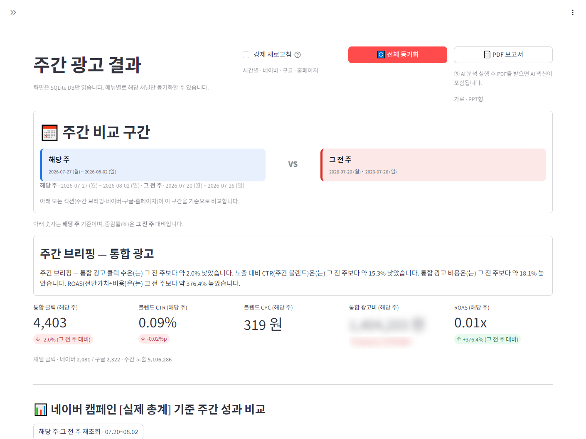
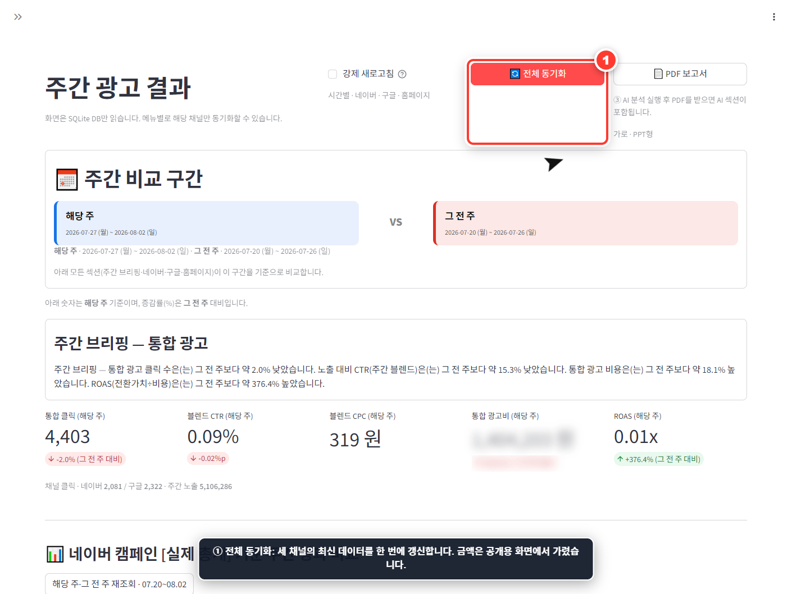
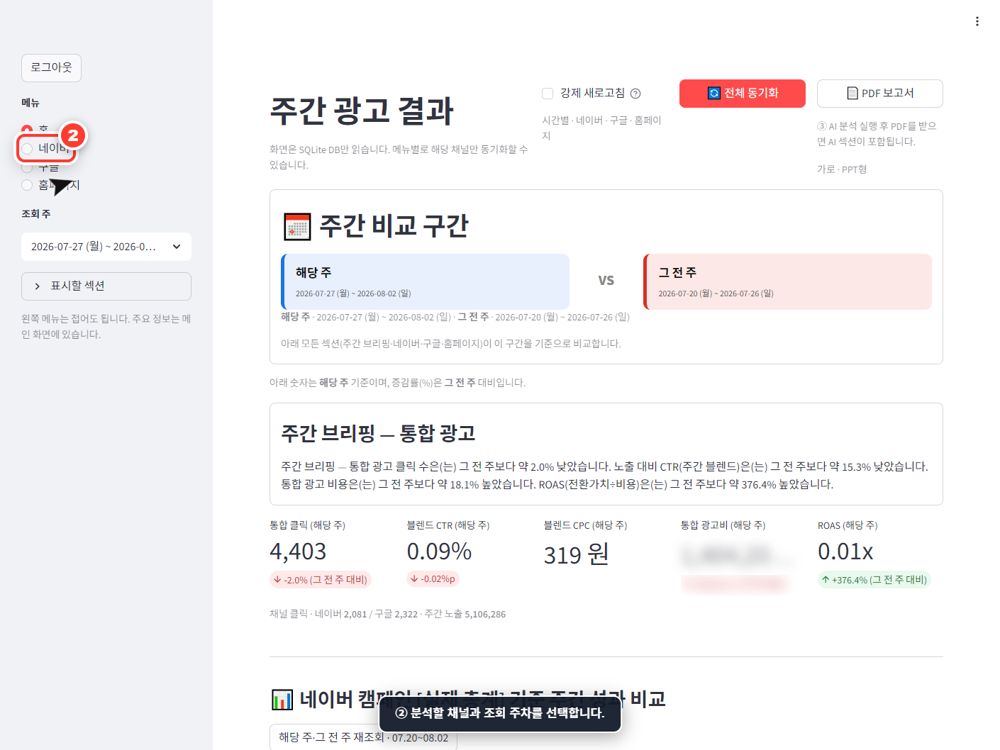
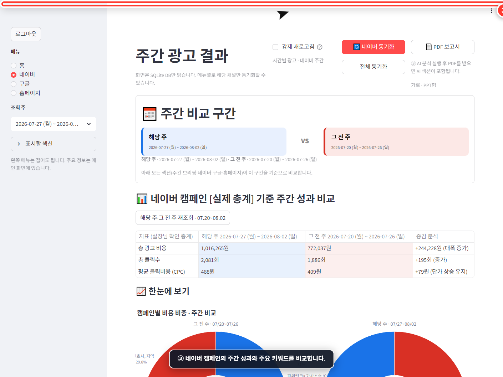
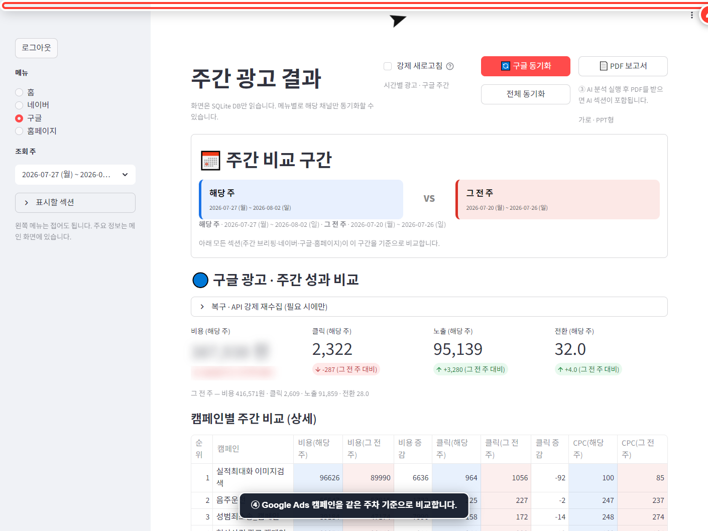
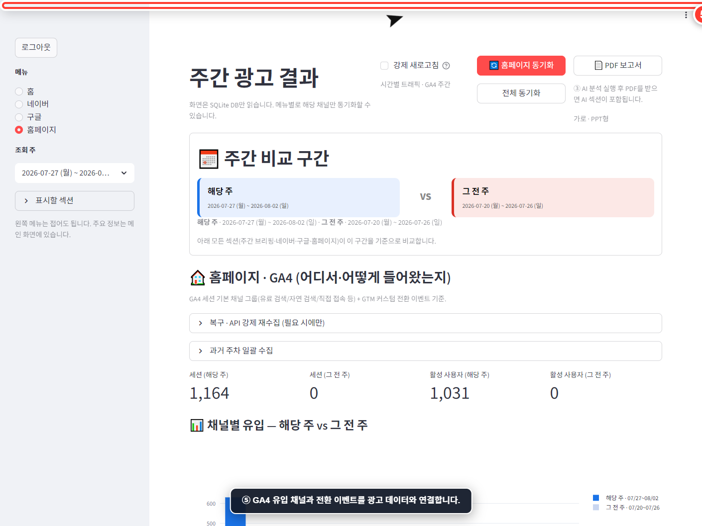
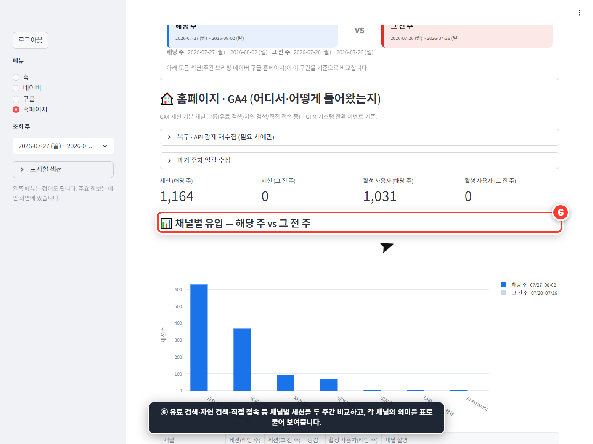
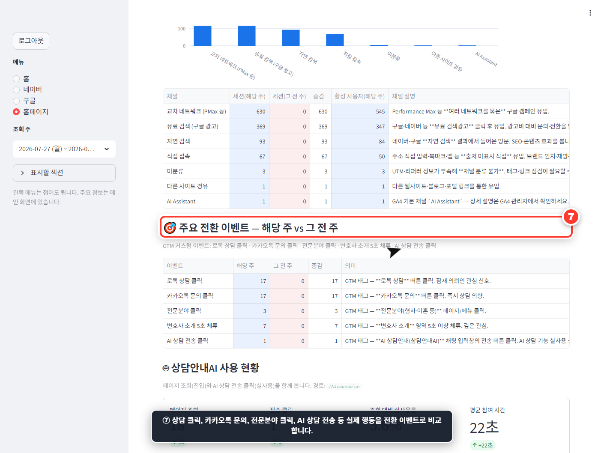
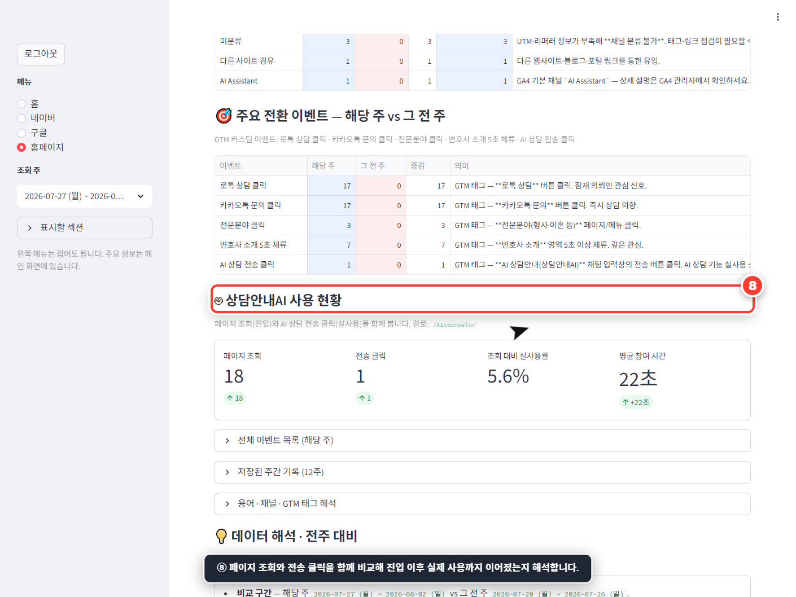

멀티 채널 통합
네이버 검색광고, Google Ads, GA4 데이터를 동일한 주차 기준으로 한곳에 정리합니다.
Marketing Analytics Project
네이버 검색광고, Google Ads, GA4 데이터를 자동 수집하고 광고 성과부터 실제 웹사이트 유입과 전환까지 한 화면에서 비교하는 통합 대시보드입니다.

Why I Built It
채널마다 관리 화면과 지표 체계가 달라 성과 데이터를 모으고 같은 기간으로 맞추는 데 많은 시간이 들었습니다.
이 프로젝트는 여러 채널의 데이터를 하나의 SQLite 데이터베이스에 모아 완료된 월요일~일요일을 기준으로 자동 정리합니다. 화면을 열 때마다 외부 API를 호출하지 않고 저장된 데이터를 읽기 때문에 빠르고 안정적으로 과거 성과를 확인할 수 있습니다.
단순한 노출·클릭 집계를 넘어 광고비, CTR, 캠페인, 키워드, 웹사이트 세션과 전환 이벤트를 함께 연결했습니다. 따라서 광고를 얼마나 집행했는지뿐 아니라 그 결과 실제 방문과 행동이 얼마나 발생했는지까지 판단할 수 있습니다.
Core Features
데이터를 모으는 작업과 의사결정에 필요한 결과물을 하나의 대시보드 안에 연결했습니다.
네이버 검색광고, Google Ads, GA4 데이터를 동일한 주차 기준으로 한곳에 정리합니다.
해당 주와 그 전 주의 광고비, 클릭, CTR, 세션과 전환 변화를 자동 계산합니다.
이미 저장된 데이터는 재사용하고 누락되거나 최근인 구간만 수집해 API 호출을 절약합니다.
캠페인·키워드별 성과와 추이를 확인하고 효율이 높거나 낮은 후보를 자동 요약합니다.
Gemini가 핵심 변화와 개선 포인트를 문장으로 분석하며 후속 질문도 이어갈 수 있습니다.
AI 분석을 포함한 가로형 PDF 보고서와 캠페인 비교 CSV를 바로 내려받을 수 있습니다.
How It Works
전체 데이터를 갱신한 뒤 분석할 채널과 주차를 선택하면 됩니다.
상단의 전체 동기화를 누르면 네이버, Google Ads, 홈페이지 데이터를 최신 상태로 갱신합니다. 강제 새로고침을 끄면 저장된 과거 데이터는 재사용합니다.

왼쪽 사이드바에서 홈, 네이버, 구글, 홈페이지 중 하나를 선택합니다. 조회할 주와 화면에 표시할 보고서 섹션도 필요한 것만 고를 수 있습니다.

선택 주와 이전 주의 캠페인 성과를 비교하고 광고비, 클릭, CTR, 주요 키워드와 캠페인별 특이사항을 확인합니다.

네이버와 동일한 주차 기준으로 Google Ads 캠페인의 비용과 클릭 변화를 분석합니다. 비교표는 CSV로 내려받아 추가 분석에도 활용할 수 있습니다.

GA4의 유입 채널, 세션 및 주요 전환 이벤트를 광고 데이터와 함께 확인합니다. 매체 성과가 실제 웹사이트 행동으로 이어졌는지 판단할 수 있습니다.

Actual GA4 Output
대시보드는 “방문자가 늘었다”는 한 문장으로 끝내지 않습니다. 어디에서 들어왔는지, 들어온 뒤 어떤 행동을 했는지, 특정 기능을 실제로 사용했는지를 세 단계로 나눠 보여줍니다. 공개용 캡처에서는 광고 금액만 흐리게 처리했습니다.
유료 검색, 자연 검색, 직접 접속 등 채널별 세션을 해당 주와 그 전 주로 비교하고, 각 채널이 어떤 유입을 뜻하는지 설명합니다.

상담 클릭, 카카오톡 문의, 전문분야 클릭, 소개 페이지 체류, AI 상담 전송 등 중요한 행동을 전환 이벤트로 정의해 비교합니다.

상담안내AI 페이지 조회와 메시지 전송을 함께 비교해 단순 진입과 실제 사용을 구분합니다. 실사용률과 평균 참여 시간도 보여줍니다.

What Makes It Special
반복 보고 과정에서 시간을 많이 쓰는 수집, 기간 정렬, 비교, 해설과 파일 제작을 자동화했습니다.
Technology & Outcome
로컬 실행부터 정기 수집, 알림과 보고서 생성까지 확장할 수 있도록 구성했습니다.
채널별 파일을 내려받아 직접 합치고 표와 보고 문장을 작성하던 과정을 대시보드 동기화와 보고서 다운로드로 줄였습니다.
광고 매체 지표와 GA4 방문·전환을 연결해 클릭 수뿐 아니라 실제 사용자 행동을 기준으로 성과를 판단할 수 있습니다.
네이버 검색광고·Google Ads·GA4를 연결해 매주 반복되던 마케팅 보고를 더 빠르고 일관된 과정으로 바꾼 프로젝트입니다. 분석이 끝나면 화면 상단의 PDF 보고서 버튼으로 결과를 바로 내려받을 수 있어 별도의 보고서 편집 과정도 줄일 수 있습니다.